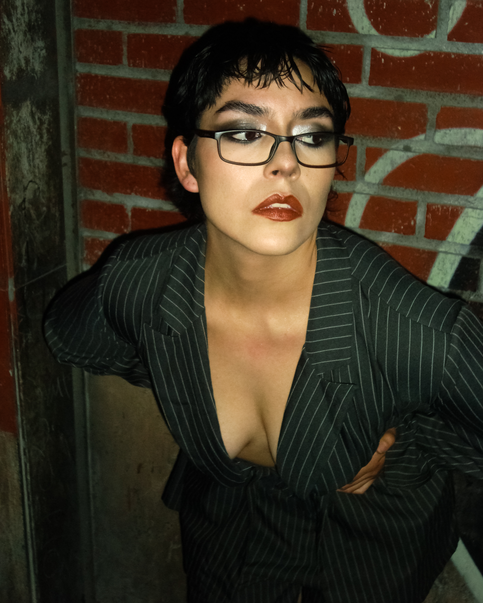
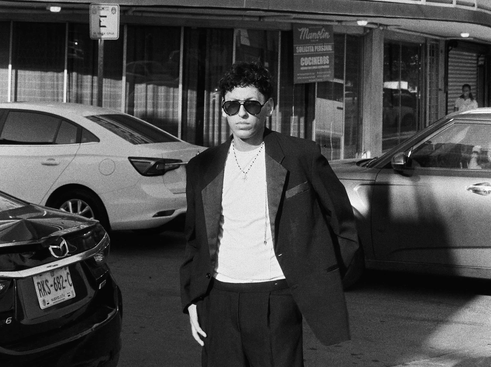
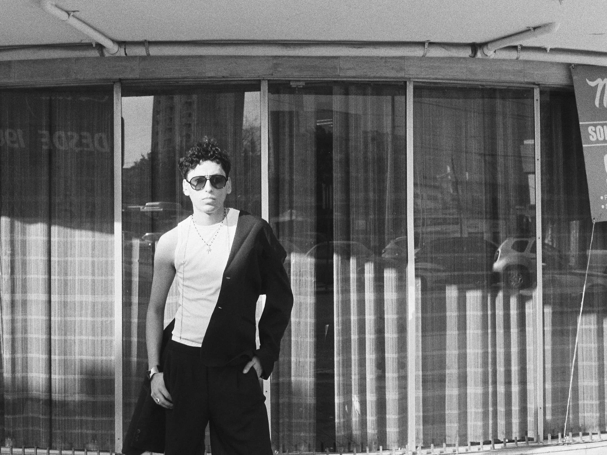

← BACK
— All frames
Camption es un archivo visual de sesiones fotográficas. Cada entrada documenta un shoot completo — locación, material, intención — como un diario de trabajo. No es solo lo que salió bien, sino el proceso de llegar ahí.


